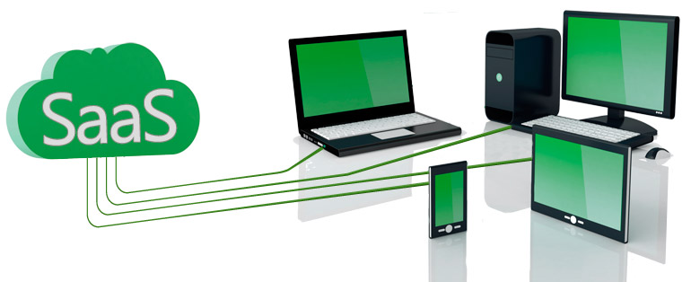

ASP.Net SaaS Web Application Development

Software as a Service (SaaS) is a software distribution model in which applications are hosted by a vendor or service provider and made available to customers over a network, typically the Internet.
SaaS is becoming an increasingly prevalent delivery model as underlying technologies that support Web services and service-oriented architecture (SOA) mature and new developmental approaches, such as Ajax, become popular. Meanwhile, broadband service has become increasingly available to support user access from more areas around the world.
SaaS is closely related to the ASP (application service provider) and on demand computing software delivery models. IDC identifies two slightly different delivery models for SaaS. The hosted application management (hosted AM) model is similar to ASP: a provider hosts commercially available software for customers and delivers it over the Web. In the software on demand model, the provider gives customers network-based access to a single copy of an application created specifically for SaaS distribution.
The traditional model of software distribution, in which software is purchased for and installed on personal computers, is sometimes referred to as software as a product.
Benefits of SaaS model:
- Simplify Administration.
- Agile: Automatic updates and patch management.
- Compatibility: All users will have the same version of software.
- Collaborate: Users on the same data pool.
- Global accessibility: Any device connected to the Internet.